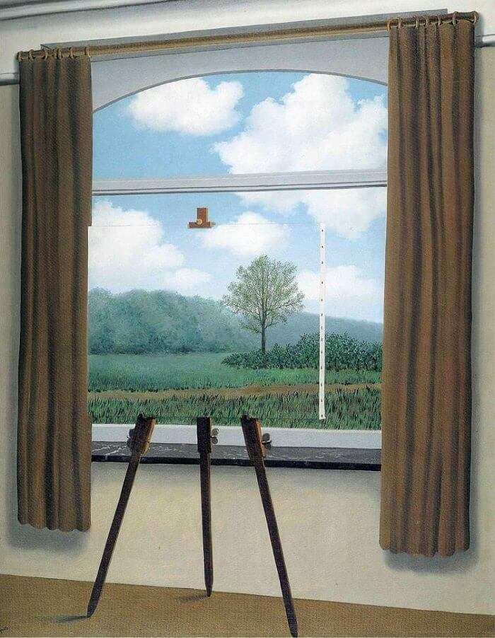

Background
Here are some quick facts that may serve as my 'background' :
- Hometown : Lancaster, Pa
- University : Pennsylvannia State University
- Degrees : Mathematics (Focus: Game Theory) &
Computer Science (Focus: Operating Systems)
- Corporations : Blockchain Consultant at IBM (current) &
Technology Analyst at JP Morgan (past)
Vision
Perhaps a pompous title but nonetheless my motivation is as follows.
When I was younger I was enamored by the fact that hundreds of people around the world would contribute their knowledge to Wikipedia all for free! This along with my initial curiosity in economics and mathematics has led me to the fundemental question that I have the fortunate opportunity to explore. How can we use software to enable people around the world access to the same resources I was blessed to be born with. Wikipedia allows anyone with an open internet connection to have access to the greatest colletion of information ever known to humans. It is my hope that we can enable any human access to open financial systems and many other things that havent even been conceived yet. I hope to elaborate in an essay soon.
Music
I do not make any music (yet..), but I enjoy listening to it!
Artists I Like
- Frank Ocean
- The Smiths
- Prince
- The Strokes
- James Blake
- Flying Lotus
- Joy Division
- Charlie Parker
- Grimes
- + A Few More
Uncovering the features of a piece of music that make it someones favorite is an incredibly enlightening experience. Sometimes I wish all introductions began with a discussion of each persons favorite song and why, but of course music may not serve this purpose for all people. I also enjoy expirementing with collaborative/crowd-sourced playlists, let me know if interested! Heres my Spotify :
Art
I do not make any art (yet..), but I enjoy looking at it!
A Few Pieces I Like
Joshua Hagler Sking Shed Song (2018)
John Lurie , The sky is falling. I am learning to live with it. (2016)
Jean-Michel Basquiat, Untitled Skull (1981)

Rene Magritte, La condition humaine (1933)

It is my opinion that "art for the sake of art", as opposed to more utilitarian takes on art, has been one of the greatest advancements in human thought in the last century. I find discussing art with other humans immensely satisfying. At an abstract level, this is really comparing how strokes of paint reflect light differently into our eyeballs, evoking a range of chemical responses in our brains known as emotion. As humans, the same piece of art can mean entirely different things to different people. Exploring these differences in interpretations is one of the clearest windows I can get into others perspectives and thus where my satisfaction in discussing art comes from. I'd love to discuss art with you sometime :)
Quotes
Below are a few of my favorite quotes, perhaps these speak more than my intro does.
“There is hardly a doubt that all human art primarily developed in the service of rituals and that the autonomy of ‘art for art’s sake’ was achieved only by another, secondary step of cultural progress” - On Aggression , Konrad Lorenz
"We can forgive a man for making a useful thing as long as he does not admire it. The only excuse for making a useless thing is that one admires it intensely. All art is quite useless" - Oscar Wilde
"The combination of individual interests and common interest in an organization suggests an analogy with a competitive market. " - The Logic of Collective Action, Mancur Olson
"Great civilizations build bridges, not walls" - Unknown Origin
"Once man stopped populating the cosmos with gods, he went inside" - Carl Jung
"When one has not a good father, one must create one" - Nietzche
"Who in their mind has not probed the black water? Maybe we all have in us a secret pond where evil and ugly things germinate and grow strong. But this culture is fenced, and the swimming broods climb up only to fall back. Might it not be that in the dark pools of some men the evil grows strong enough to wriggle over the fence and swim free? Would not such a man be our monster, and are we not related to him in our hidden water. It would be absurd if we not understand both angels and devils, since we invented them." - East of Eden , John Steinbeck
"Reason is the slave of passion" - Crime & Punishment, Dostoevsky
"You dream of walls that hold us in prison. It's just a skull, least that's what they call it" - White Ferarri, Frank Ocean
"Everybody want world peace
'Til your niece get shot in the dome-piece
Then you go and buy your own piece
Hopin' it'll help you find your own peace" - Cudi Montage, Kanye West (double entendre w/ 'piece')
"A picture's worth a 1000 words but a word ain't worth a dime" - Voices, Sturgill Simpson
"My teachers told me we was slaves.
My mama told me we was kings.
I don't know who to listen to.
I guess we somewhere in between." - Summertime, Vince Staples
"Last summer's reeds are all engraved in ice - as is your image in my eye; dry frost glazes the window of my hurt; what solace can be struck from rock to make heart's waste grow green again? Who'd walk in this bleak place?" - Winter Landscape, with Rooks , Sylvia Plath
Contact